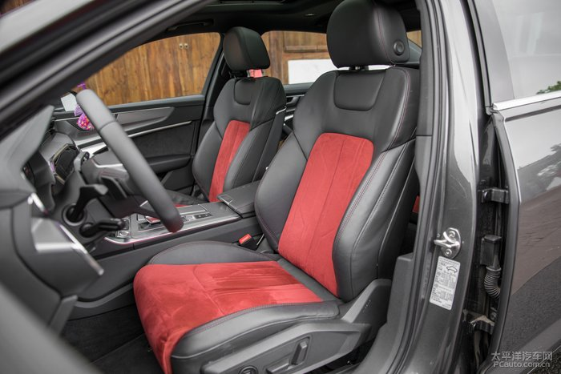
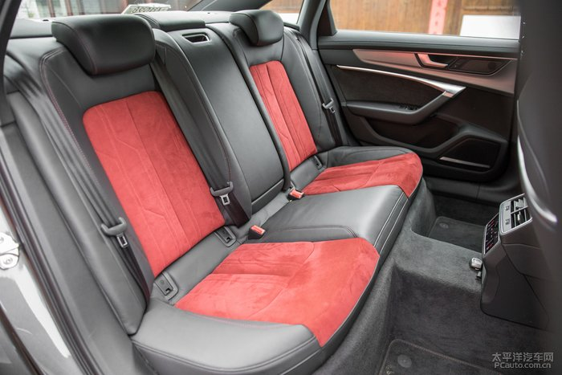
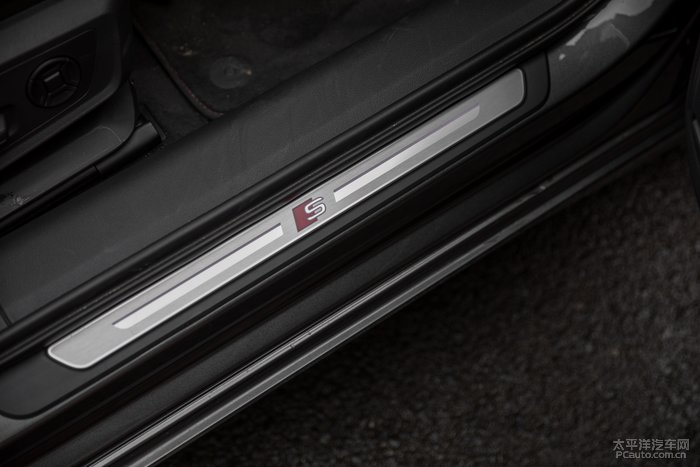

由内而外的蜕变 解析全新奥迪A6L
2019-01-22 23:19前言

大家都知道，奥迪作为3大豪华品牌之一，家族传承里面也是非常齐全，从小型车到大型豪华车都有，但论销量地位奥迪A6，只要一提到奥迪大家想的就是A6L,在政府用车的地位中也很强大，婚车运用的也很多，主要还是它沉稳大气的外光吸引众多消费者的心，那么全新一代奥迪A6L会给我们代来哪些体验呢，一起来看看吧
外观
家族式的前脸，6边型的进气格栅，大量的镀铬装饰，两侧的大灯也是有菱有角，整体非常协调，加上的格栅相呼应，让整个车头看起来沉稳中带来更多的科技感。

这个角度是我最喜欢的，整体上来看跟上一代还是有很大差别的，这一代更加有冲击力，更加大气。
从侧面来看不规则的腰线要比上一代来的更加突出，搭配上20寸的超大轮毂简直就是完美。轴距达到3024，这个数据在同级别当中还是属于领先水平的，具体会给我们代来什么样的感受呢，待会再看
尾部的变化也非常大，一条超长的镀铬装饰条横穿左右两只大灯，让整个车尾显得更加宽大，加上双排气矩形的照型看上去更加动感大气。
奥迪A6整体的做工还是非常精致的，最直接的感受就是整体有菱有角的设计加上整体的做工，缝隙的均匀程度还有一些比较到位的细节上，都能体现出一个豪华品牌该有的水准。在家用和商用之间都非常合适。

全新设计有菱有角的大灯跟整体的车身相呼应，真是科技感爆棚。
后尾灯也是采用全LED夜晚效果很棒，辨识度也很高。
这套255/40 R20 轮毂搭配轮胎真的很到位，不管是在美观度还是舒适度上面都很好，轮毂的造型也是我超喜欢的
内饰
更上一代相比，这一代的的内饰发生了翻天覆地的变化，不点火的情况下3块屏幕漆黑一片看上去确实一般，但是当你点火之后科技感马上就能体现，中控大屏是现在其他品牌都争相模仿的一个元素，内饰整体用料实在，即使是新车，车内的空气质量非常好，VOC方面很好。三幅式方向盘方向盘树干很好，并且有着丰富的多功能按键，让驾驶更加轻松，让驾驶更加安全。整体的品质体现奥迪A6L在中大型款汽车中实至名归的标杆车型。
45度角的中控效果非常好，
多功能按键非常齐全，左边菜单操作区，右边电话·多媒体调整区。黑色的钢琴烤漆唯一不好的一点就是会留下指纹，而且像我这这种手汗特别严重的的人来说对我真的不是很友好。
自动大灯，雾灯后雾灯这些都已成为标配。
左右两边分别是水温表跟油表。
独立的定速巡航波感也是奥迪的一贯作风，
A6的后排最大的特色就是同时可以控制两边的窗户以及后遮阳帘和天窗的开启，可以说是功能非常强大，商务服务非常到位，只不过在用的时候会有一点小尴尬，盲操作的时候往往会搞错，一不小心会按到其他的东西。
主驾驶视角，视线还是非常好的
仪表盘的功能非常强大，模式也是非常之多，导航可以直接映射到仪表盘，还可以实现全屏模式。
里面的操作界面也很简单明了，熟悉一下就能上手了。
中空两块大屏也是这种全液晶式的，虽然没有物理按键，但是在设计上你按上去他会有震动提示，不会实现盲目操作，这一点还是做的相当出色的。这种全液晶代来不好得一点就是指纹采集中心哈哈，这个对于处女座的人来说真的是硬伤。
界面简单明了，找什么东西一目了然。
空调区域这种设计给我的感觉就是高大上，跟大哥A8看齐了。座椅通风加热也是在这个页面操作的。
360全景影像·倒车雷达·倒车影像，这个功能真的很实用，我们还特地找了一个障碍物去试了一下
支持各种角度3D环绕的调节，可以看到整个车外的情况，而且旁边还有红线辅助提示你应该怎么打方向，在去一些复杂路面，小弄堂，人流密集的地方，即使你个人在路上也不用下车观察路面的情况，让你从容面对。
360全景影像的后视镜摄像头
中间常规两个杯座外加一个12伏电源
旁边电子挡吧家电子手刹，设计还是很合理的
天窗的按键设计的也非常好，上面还有一个sos的求救功能，这个我没有尝试过。哈哈
空间

红黑的设计搭配非常好看座椅的包裹支撑也非常好

后排的中间有点隆起，对于中间乘客不是很友好，更加适合4人去乘坐。
前排调制我合适的位置头还有一拳的空量
后排不用我说大家都应该知道了吧，我想我敲二郎腿也不是问题，已经不能用拳头来衡量了。长途远行也不会感觉累，后排表现非常好。
能碰的到的地方都用了软的材料装配，缝线加翻毛皮的拼接也是为整体的质感加分。
后排独立的空调控制下面是一个12伏电源，配置没得说
座椅后面加入了镀铬的装饰条，让座椅看上去更加有力量感，

无处不彰显的小设计，让整车的质感加分不少
使用95号无铅汽油。
电动尾门也标配之一
动力
在试驾之前，还是先看下这款奥迪A6L的动力，2.0T的高功率涡轮增压发动机匹配7速双离合变速箱，相对于低功率版本，更加推荐高功率的车型，毕竟动力是后期无法弥补，不像配置一样可以加装，当然，买这车的人我估计大家应该不在乎动力而是更加在乎舒适性了吧，也不会去在乎那多个一秒两秒的。而低功率的车型是为了拉低整体入门的价格。双离合变速箱的换挡更及时，同时油耗更加可观，更加适合国人的路况。
总结
奥迪A6L作为一款中大型车，不仅有着沉稳大气，同时还有科技感。外加超大的3块中控大屏，简约时尚大气，操作简单明了，易上手。超大的空间体验也非常好，无论是前排还是后排，都能给你想要的满足感。新款奥迪A6的到来，给我们代来这么多科技感的东西，也让我们见证一个新的时代的来临。